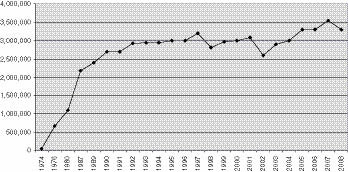
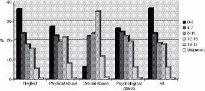
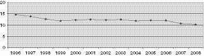

1
Trauma and Dissociation
30 Years of Study and Lessons Learned Along the Way1
Psychological trauma is an affliction of the powerless. At the moment of trauma, the victim is rendered helpless by overwhelming force. When the force is that of nature, we speak of disasters. When the force is that of other human beings, we speak of atrocities. Traumatic events overwhelm the ordinary systems of care that give people a sense of control, connection, and meaning.… Traumatic events are extraordinary, not because they occur rarely, but rather because they overwhelm the ordinary human adaptations to life.… They confront human beings with the extremities of helplessness and terror, and evoke the responses of catastrophe.
— Judith Lewis Herman, MD, Trauma and Recovery (1992b, p. 33)
Our current understanding of trauma and dissociation is relatively recent, beginning to emerge only about 30 years ago. Posttraumatic stress disorder and the dissociative disorders—as we currently understand them—were first codified in the American Psychiatric Association’s Diagnostic and Statistical Manual of Mental Disorders, Third Edition (DSM-III) in 1980. Given what we now know about the effects of severe and chronic trauma, it is extraordinary that so little about it was acknowledged or understood just a few decades ago. What contributed to this pervasive blindness to critical issues that affect the many traumatized persons in North American society? The answer to this question is complex and has historical precedents.
Since the late 19th century the pendulum has swung between recognition and denial of the abuse of children, particularly sexual abuse. Pierre Janet (1907) wrote extensively about the relationship between trauma (including childhood abuse) and dissociation. In his 1896 publication, The Aetiology of Hysteria, Sigmund Freud (1896) postulated a link between childhood sexual abuse and psychiatric illness, a theory that he subsequently disavowed (Simon, 1992). Clearly, the Victorian values of Freud’s time may have contributed to his disavowal of his “seduction hypothesis,” which implied that incest was commonly the underlying cause of a wide variety of symptoms that were ascribed to female “hysteria,” including fainting, nervousness, insomnia, weakness, muscle spasms, shortness of breath, irritability, loss of appetite, and diminished libido. However, the result of Freud’s disavowal was the subsequent denial of the reality of abuse by generations of psychiatrists, psychologists, and other mental health professionals. The noted psychoanalysts Elizabeth Zetzel and William Meissner (1973) captured this stance beautifully in one of their texts on psychoanalytic theory and practice:
The abandonment of the seduction hypothesis and the realization that the patient’s reports of infantile seduction were not based on real memories but fantasies marked the beginning of psychoanalysis as such. The importance of reality as a determining factor in the patient’s behavior faded into the background.… The focus of analytic interest turned to the mechanisms by which fantasies were created. (pp. 72–73)
Thus was the foundation laid for professionals to dismiss the realities of their patients’ reports for generations. As recently as the 1980s, respected psychiatrists might have interpreted a patient’s report of early sexual molestation by her father as “fantasies derived from Oedipal wishes” (meaning that the patient as a child had fantasized the incest because of her wish for a kind of sexual involvement with the parent of the opposite sex). This view implied that adult women were often unable to distinguish between fantasy and reality, and essentially blamed the patient for her own victimization. At that time, psychodynamic psychiatry was still dominated by classic psychoanalytic thinking, where conflicts about sexual drives, instincts, and fantasies were considered more important than the possible reality of occurrence of actual abuse. In fact, even when professionals believed that sexual abuse had occurred, the major emphasis was the resulting intrapsychic conflicts and not on the actual experience and aftereffects of the molestation.
Even among enlightened and sensitive professionals, the harsh facts concerning abuse are easily forgotten. For example, in spring 1992, a national organization released the results of a large-scale study, Rape in America: A Report to the Nation (National Victim Center, 1992). The grim statistics reported that one in eight women in this country were likely to be the victims of forcible rape during their lifetimes. Even more striking was the finding that nearly 30% of rape victims were less than 11 years old, and that more than 60% of rape victims were under the age of 17. These statistics actually underestimated the prevalence of rape, because although each victim was counted only once, some victims reported having been raped on multiple occasions (as is often the case in incestuous abuse). The results of the study were widely covered in the national press and on network and cable television news. Somewhat surprisingly, in the subsequent weeks, fewer and fewer professionals had any recollection of the essential results of this study—including clinicians who were interested in issues of childhood abuse. Only three months later, I informally polled an audience of more than 200 attendees at a national conference on sexual abuse and found that not one person recalled hearing about the study or the results. While this might be partially ascribed to the process of normal forgetting (in which even important events are progressively unavailable to conscious memory), the all-too-human need to deny these findings is likely to have played a major role in the lack of recall.
When it comes to interpersonal trauma, psychiatrist Judith Lewis Herman, MD (1992b), has pointed to a universal desire to look the other way—a natural human desire not to have to share the burden of the immense human suffering that derives from trauma and to accept some responsibility to ameliorate it. The societal denial of pandemic childhood trauma can perhaps be best understood through Herman’s theory that disturbing ideas, such as the etiologic link between child abuse and common adult psychiatric difficulties, can only be sustained in the context of societal support. It is indeed challenging for any society to have the maturity to be able to acknowledge that it has permitted some of its most vulnerable members to be severely abused and as a result to become profoundly impaired. The cultural implications of recognizing the extent of child abuse have strongly influenced the way that the field of trauma and dissociation is viewed and whether its findings can be acknowledged and accepted or denied and reviled. Herman has argued that any single individual does not have the ability to challenge entrenched cultural beliefs and norms, and that the support of a political movement is necessary to allow it to be truly seen and studied. The modern recognition and study of complex posttraumatic and dissociative disorders stemmed from two major political and sociologic phenomena: the Vietnam War and the Women’s Movement.
Historically, wars have forced societal attention to focus on the widespread and profound impact of overwhelming violence and trauma in postwar eras. In the United States, after the Civil War, a syndrome labeled “soldier’s heart” was described (Da Costa, 1871), which included rapid heartbeat and overall autonomic activation with startle responses and hypervigilance. Following World War I, many American and European soldiers were described as suffering from “shell shock,” a condition described as “emotional shock, either acute in men with a neuropathic predisposition, or developing as a result of prolonged strain and terrifying experience” or “nervous and mental exhaustion, the result of prolonged strain and hardship” (Southborough, 1922, p. 92). During and following World War II, clear posttraumatic syndromes were defined. Kardiner (1941) described a “physioneurosis” that included flashbacks, amnesia, irritability, nightmares, and other sleep disturbances. Saul (1945) used the term “combat fatigue” that resulted from overwhelming stress combined with the inability to act, and was manifested by emotional distress along with irritability, nightmares, and increase in heartbeat, respirations, and blood pressure. The original Diagnostic and Statistical Manual of Mental Disorders (DSM) was published by the American Psychiatric Association (APA) in 1952 during the Korean War, and the second edition (DSM-II) was published in 1968 during the Vietnam War. Both volumes recognized behavioral and emotional reactions to overwhelming fear or stress.
In the wake of the Vietnam War, an interesting paradox occurred. The war had become extremely unpopular, and by the fall of Saigon in 1975, most Americans were either politically opposed to the conflict or at least relieved to see an end to it. Most clearly did not want reminders of the failed war, and unlike more recent attitudes toward the military, many civilians regarded veterans as somehow tainted by their association with the recent conflict. Public opinion was so negative that veterans were reluctant to talk about their experiences or wear their uniforms in public. However, even in this climate of disavowal, health care professionals and eventually the American public had to acknowledge that a large cohort of young men and women returned from the war profoundly changed and damaged. This phenomenon facilitated the subsequent adoption of PTSD in the DSM-III in 1980. The increasing public and professional acknowledgement of the aftereffects of trauma allowed Vietnam veterans to be treated with a level of compassion and sophistication not seen in other postwar eras.
In 1983, Congress mandated the National Vietnam Veterans Readjustment Study (NVVRS; Kulka et al., 1990). Although the survey found that the majority of combat veterans made a successful adjustment to peacetime life, the NVVRS found that a substantial minority of Vietnam theater veterans continued to suffer from a variety of psychological and life-adjustment problems. Approximately 30% had experienced some form of posttraumatic problems. Even more alarming was the finding that for many veterans (approximately 12%), their PTSD had become a chronic condition. In a more recent study of 1,377 American Legionnaires 14 years after the NVVRS, 11% continued to suffer with more psychological and social problems, including marital problems with higher divorce rates, parenting difficulties, general unhappiness and difficulties functioning, and more physical problems, including pain, fatigue, and infections (Koenen, Stellman, Sommer, & Stellman, 2008).
Just as the Vietnam War focused attention on the effects of combat-related trauma, the Women’s Movement and the rise of modern feminism profoundly changed attitudes concerning trauma toward women and the welfare of children. The Women’s Movement provided the political will and social support to draw attention to long-neglected issues such as domestic violence, rape, and child abuse. Not surprisingly, many of the pioneers in the burgeoning trauma field in the 1970s and 1980s were women, many of whom embraced feminist values. Ann Wolbert Burgess, RN, DNSc, co-founded a crisis intervention program for rape victims at Boston City Hospital in 1972 (see Burgess & Holmstrom, 1974) and subsequently went on to become a pioneer in the study of the sexual assault on children and their exploitation in child pornography (Burgess, Groth, Holmstrom, & Sgroi, 1978). Similarly, Christine Courtois, PhD, co-founded a campus rape crisis center at the University of Maryland in 1972 and discovered that some clients of the center reported past sexual assault, including long histories of incest. Courtois went on to study and treat the effects of childhood abuse, helping other clinicians who were struggling to find guidance and support when there was a profound dearth of information on the subject of abuse and publishing the first major text on treating victims of incest, Healing the Incest Wound (1988). Our current understanding is that early sexual abuse can have devastating posttraumatic effects, but Courtois noted, “the most accurate diagnosis for incest response was posttraumatic stress disorder, an idea that seemed heretical at the time (1981) because PTSD was highly associated in the minds of clinicians with the Vietnam veterans” (p. xv).
In the 1970s, Herman began hearing many stories concerning incest in her adult women patients who had been diagnosed with borderline personality disorder. Despite the skepticism of the psychiatric establishment, she found the incest stories convincing and began a career of studying and treating sexual violence in our society. The result was the stunning book, Father-Daughter Incest (Herman, 1981), a scientifically credible work that documented the nature and undeniable harmful effects of sexual violation, which she saw as much more common than had been previously believed. Herman was one of the feminist pioneers who first understood the logical link between the trauma and betrayal of incest and the profound difficulties in functioning experienced by patients with borderline personality disorder.
CHILDHOOD ABUSE: THE HIDDEN EPIDEMIC
The pioneers of the study of childhood abuse and its effects did much to fuel subsequent investigation of the effects of trauma, including understanding the development of posttraumatic and dissociative symptoms and disorders. Little was known in the 1970s and early 1980s about the prevalence or effects of childhood sexual abuse. Earlier estimates of prevalence had reported a very low incidence of incest (e.g., Weinberg’s 1955 estimate of an average yearly rate of incest of 1.9 cases per million children). Similarly, no real data existed concerning the effects of child sexual abuse. Kinsey and his colleagues downplayed any negative effects of incest: “It is difficult to understand why a child, except for its cultural conditioning, should be disturbed at having its genitalia touched” (Kinsey, Pomeroy, & Martin, 1948, p. 121). In fact, one of Kinsey’s co-authors, Walter Pomeroy, was later infamously quoted as saying, “Incest between adults and younger children can … be a satisfying and enriching experience.…” (Pomeroy, 1976, p. 10). Interestingly, Kinsey and his colleagues were surprised by their finding of a high rate of attempted sexual contact in childhood from their interviews with adult women. They found that 24% of the women recalled sexual advances by adult males when they were children, but the researchers downplayed the importance of this finding because most approaches did not result in actual sexual acts (Kinsey, Pomeroy, Martin, & Gebhard, 1953).
Modern research on the prevalence of childhood sexual abuse has yielded disturbingly congruent information concerning the rates of abuse. In 1986, psychologist Diana Russell, PhD, published The Secret Trauma: Incest in the Lives of Girls and Women, which reported the results of a landmark survey of the prevalence of sexual abuse in women in the general population. In interviews of 930 women in the San Francisco Bay area, more than one-third reported some kind of unwanted sexual contact in childhood. About half of the reported sexual abuse was incestuous abuse—sexual abuse perpetrated by a family member. These findings were considered surprisingly high when they were first reported but have stood up well in subsequent studies of general population samples in North America (Briere & Elliott, 2003; Vogeltanz et al., 1999). Russell’s work and subsequent studies have made it clear that the sexual abuse of girls is widespread and that it occurs among all ethnic groups and throughout all socioeconomic levels of our society.
Studies of the prevalence of the sexual abuse of boys have shown lower rates as compared to girls, but the rates are still high; when using a broad definition of sexual abuse (e.g., unwanted sexual contact in childhood), studies have found that one in six or seven adult men in the general population report some kind of childhood sexual abuse (Briere & Elliott, 2003; Elliott & Briere, 1995; Finkelhor, Hotaling, Lewis, & Smith, 1990).
Much of the research concerning the rates of childhood abuse has focused on sexual abuse, not only because of the extreme violation of boundaries and roles, but also because it is easier to quantify and study. There are far fewer ambiguities in defining sexual abuse as compared to physical abuse, emotional abuse, and neglect. However, the focus on this one type of childhood maltreatment does not imply that the potential aftereffects for other types of abuse are less serious. The few prevalence studies of physical abuse in childhood have suggested rates of 20% to 30% for both girls and boys (Briere & Elliott, 2003; MacMillan et al., 1997). These studies, combined with other research, lead to the unfortunate conclusion that both childhood physical and sexual abuse is widespread in our society and internationally (Finkelhor, 1994) and is perpetrated on both girls and boys. Although both physical and sexual abuse occurs among all children, girls are more likely than boys to be sexually abused, and, as shown in at least one study, boys were more likely than girls to be physically abused (MacMillan et al., 1997).
BEHIND CLOSED DOORS: SHAME AND SECRECY
In addition to societal denial and disavowal, there are other powerful reasons why the abuse of children is frequently hidden. The nature of child maltreatment—particularly child sexual abuse—and the circumstances in which it occurs also lead to the tendency not to acknowledge its occurrence or its aftereffects. Almost invariably, children feel shamed and responsible for their own victimization. In two remarkable papers, psychoanalyst Leonard Shengold, MD (“Child Abuse and Deprivation: Soul Murder”; 1979), and psychiatrist Roland Summit, MD (“The Child Sexual Abuse Accommodation Syndrome”; 1983), elucidated the way those who are injured by childhood abuse come to blame themselves for having been victimized:
If the very parent who abuses and is experienced as bad must be turned to for relief of the distress that the parent has caused, then the child must, out of desperate need, register the parent—delusionally2—as good. Only the mental image of a good parent can help the child deal with the terrifying intensity of fear and rage which is the effect of the tormenting experiences. The alternative—the maintenance of the overwhelming stimulation and the bad parental imago—means annihilation of identity, of the feeling of the self. So the bad has to be registered as good. (Shengold, 1979, p. 539)
The child faced with continuing helpless victimization must learn to somehow achieve a sense of power and control. The child cannot safely conceptualize that a parent might be ruthless and self-serving; such a conclusion is tantamount to abandonment and annihilation. The only acceptable alternative for the child is to believe that she has provoked the painful encounters and to hope that by learning to be good she can earn love and acceptance. The desperate assumption of responsibility and the inevitable failure to earn relief set the foundation for self-hate.… (Summit, 1983, p. 184)
Psychologist Jennifer Freyd, PhD (1994), has offered another recent interpretation concerning the children’s denial of their own victimization—even to the extent of forgetting it—as a syndrome of “betrayal trauma”:
Betrayal trauma theory suggests that psychogenic amnesia is an adaptive response to childhood abuse. When a parent or other powerful figure violates a fundamental ethic of human relationship, victims may need to remain unaware of the trauma not to reduce suffering but rather to promote survival. Amnesia enables the child to maintain an attachment with a figure vital to survival, development, and thriving. (p. 304)
Children often fail to disclose abuse, even when they remember it. In addition to feeling shame and complicity, they may fear that the family unit would be disrupted, they may feel guilty for possible consequences to the perpetrator, and they may fear retaliation, which is often heightened by perpetrators’ injunctions “not to tell” with threats of further harm to the victim or other family members (Swanson & Biaggo, 1985). Such patterns of intrapsychic and familial dynamics result in secrecy and shame. The abuse remains hidden behind closed doors and, in many cases of sexual abuse, concealed from other family members. It is not surprising that children not only often fail to disclose abuse, but when they do, they often recant their statements (Sorensen & Snow, 1991). Unspoken and unseen, damage done to victims of child maltreatment continues to grow and fester, often only emerging many years afterward as multiple and varied psychiatric symptoms and disorders and major impediments to healthy functioning.
Patterns of intrafamilial abuse are facilitated by many societies’ emphasis on parental rights—to raise children as they see fit—as a cherished principle that supports familial and cultural values (Miller, 1983). Although it can be legitimately argued that this cultural tradition has many positive aspects, its inherently optimistic views of parental child-rearing capacities may be misguided. Through our clinical experience, we know that the capacity to care for and raise children is substantially learned through having been adequately nurtured in childhood; that is, those who have had positive parenting are more likely to become good parents. In cases where parents have been the victims of childhood abuse or neglect, their parenting abilities may be massively flawed. The tragic result can be intergenerational cycles of human misery.
The potential harm to children who are raised by poorly equipped parents is compounded by the lack of any systematic training about parenting. This unfortunate tradition is long standing, existing more than a century ago, as evidenced by a quote by an English author, philosopher, and sociologist, Herbert Spencer, from an 1869 book on the home and families (Beecher & Stowe, 1869):
Is it not an astonishing fact that, though on the treatment of offspring depend their lives or deaths and their moral welfare or ruin, yet not one word of instruction on the treatment of offspring is ever given to those who will hereafter be parents? Is it not monstrous that the fate of a new generation should be left to the chances of unreasoning custom, or impulse or fancy? … To tens of thousands that are killed add hundreds of thousands that survive with feeble constitutions, and millions not so strong as they should be; and you will have some idea of the curse inflicted on their offspring, by parents ignorant of the laws of life. (pp. 263–264)
It appears that little has changed from the time of this 19th-century observation, leaving some unfortunate children in potentially abusive families with parents who receive little help in their struggle to raise their children.
NATIONAL STATISTICS AND REPORTING OF CHILD MALTREATMENT
In 1974, Congress enacted the first Child Abuse Prevention and Treatment Act (CAPTA; Public Law 93-247), requiring the states to enact mandatory reporting, investigation, and intervention concerning child maltreatment. Among those required to report suspected maltreatment are educators, law enforcement and criminal justice personnel, social services staff, medical personnel, mental health professionals, child daycare workers, and foster care providers. The number of annual reports rose rapidly, eventually leveling off at around 3.3 million reports each year (Figure 1.1).
Figure 1.1 Annual Reports of Child Maltreatment Reported to Child Protective Service Agencies

CAPTA was amended in 1988 (Public Law 100-294), directing the Secretary of the Department of Health and Human Services (HHS) to establish a national data collection and analysis program that would make available detailed state-by-state child abuse and neglect information. HHS established the National Child Abuse and Neglect Data System (NCANDS) as a voluntary national reporting system, which produces annual reports concerning child maltreatment. As documented in Child Maltreatment 2008 (U.S. Department of Health & Human Services, 2010), there were approximately 3.3 million referrals involving the alleged maltreatment of approximately 6.0 million children received by child protective services agencies. Nearly 63% of the referrals were screened in for investigation by child protective service agencies, and of those, approximately 24% of the investigations determined at least one child to be a victim of abuse or neglect—approximately 772,000 children. Most were victims of neglect (549,000), but there were also substantial numbers of victims of physical abuse (124,000), sexual abuse (70,000), and psychological maltreatment (56,000). Many children suffered multiple types of maltreatment. In 2008, there were 1,740 deaths of children known to be related to abuse or neglect.
As alarming as these statistics may be, they represent only the tip of the iceberg. For example, using a very conservative lifetime prevalence of 5% for serious or damaging sexual abuse, I calculate that there would be more than 200,000 cases per year.3 In the clinical arena, adult patients rarely report that they disclosed their childhood sexual abuse or that it was discovered around the time that it occurred. This observation is supported by a study analyzed by Finkelhor and his colleagues (1990) of 2,626 American men and women, in which many of those who were victims of sexual abuse never previously disclosed their experiences.
Despite the underestimating of actual prevalence, the NCANDS data elucidate the nature of child maltreatment and expose some commonly held fallacies concerning child abuse and maltreatment (Figure 1.2). For example, it’s assumed that victims of abuse and neglect—particularly sexual abuse—are older rather than younger children. In fact, the highest rates of maltreatment in 2008 were in the youngest age group (ages 0–3) and decreased with age. Even with sexual abuse, nearly 30% of victims were under age 8, and 53% were under age 12.
Figure 1.2 Percent of Victims by Age and Type of Abuse

Most child maltreatment occurs within the home. Approximately 80% of perpetrators were parents; 6.5% were other relatives, and another 4.4% were unmarried partners of parents. Of the parents who were perpetrators, more than 90% were biological parents; the others were stepparents or adoptive parents. Mothers and fathers were roughly equally likely to be perpetrators of child maltreatment, although male parents or relatives were more likely to be perpetrators of sexual abuse as compared to female family members. All racial and ethic groups were represented as both victims and perpetrators, with approximately half being white and one-fifth African-American and another one-fifth Hispanic.
Amid all the distressing statistics concerning child maltreatment in America, there may be some reasons to feel optimistic about the future. Despite the high numbers of traumatized children, the actual annual incidence of child maltreatment appears to be decreasing. In the 12 years up to 2008, NCANDS data show that the rate of child victimization may have fallen by nearly one-third (Figure 1.3).
Figure 1.3 Annual Victimization Rate (cases/1,000 children)

Have the public health efforts of government, professionals, and advocacy groups substantially changed the willingness of American society to acknowledge and intervene to prevent the maltreatment of children? If so, it is a remarkable achievement.
CHILDHOOD TRAUMA IN PSYCHIATRIC PATIENTS
Histories of childhood abuse and the symptoms of complex PTSD are extremely common among psychiatric patients. For example, our 1990 study examined nearly 100 women consecutively admitted to McLean Hospital concerning psychiatric symptoms and childhood experiences (Chu & Dill, 1990). The responses were analyzed for reports of childhood abuse and any correlations with adult symptomatology. Using a questionnaire originally developed in another study (Bryer, Nelson, Miller, & Krol, 1987), physical abuse was defined as being “hit really hard, burned, stabbed, or knocked down,” and sexual abuse was defined as “pressured against your will into forced contact with the sexual parts of your body or his/her body.” A full two-thirds of the group reported significant physical or sexual abuse in childhood. Half of the entire group reported physical abuse, and more than one-third of the group reported sexual abuse. Although these rates are high, the prevalence of sexual abuse does not differ markedly from general population statistics. What differentiates the traumatic experiences of our patients from those of nonpatients? There are many factors, including psychiatric patients being much more frequently the victims of multiple kinds of abuse, long-standing abuse, and intrafamilial abuse. The rates of abuse in our studies have been validated by almost identical results in similar studies of both inpatients (Bryer et al., 1987; Chu, Frey, Ganzel, & Matthews, 1999; Saxe et al., 1993) and outpatients (Surrey, Michaels, Levin, & Swett, 1990).
In psychiatric patients who report physical and sexual abuse, long-standing abuse beginning early in childhood is common. In one of our studies, approximately 80% of such patients reported their physical and sexual abuse as very frequent, e.g., “continuous,” “every week,” “more times than I can count” (Kirby, Chu, & Dill, 1993). Patients with chronic abuse had strikingly higher dissociative symptoms in adulthood. These patients also had disturbingly early ages of onset of their physical and sexual abuse. Nearly 60% reported that the abuse first occurred prior to age 5, and over 70% reported it occurred prior to age 11. Early age of onset was also correlated with high levels of adult symptomatology. Other studies have demonstrated that both early age of onset and chronic sexual abuse are associated with greater dissociative amnesia (Briere & Conte, 1993; Herman & Schatzhow, 1987).
To a greater extent than in general population samples, psychiatric patients are more likely to be abused within the family. Although the psychological damage inflicted by persons outside the home should not be minimized, intrafamilial abuse may be particularly damaging. In Russell’s study (1986) of women in the general population, approximately half of all sexual abuse victims were molested within the family. In contrast, in our studies of psychiatric patients (Chu & Dill, 1990; Kirby et al., 1993), the rate of intrafamilial sexual abuse in patients was much higher, with the vast majority (77%) naming family members as perpetrators. This difference in the rate of intrafamilial abuse between the general population and psychiatric populations strongly suggests that many of the psychiatric patients experienced psychological harm because their abuse was incestuous. In fact, when using dissociative symptoms as indications of psychological harm, we found that in psychiatric patients, intrafamilial abuse was correlated with more adult dissociation, whereas extrafamilial abuse was not as clearly harmful (Chu & Dill, 1990).
The damaging effect of intrafamilial abuse does not imply that abuse that occurs outside of the home is benign. Severe extrafamilial abuse may have profound deleterious effects on a child’s development. Even more alarming, the signs of abuse in a child may be far from obvious. In several instances of patients admitted to the hospital for psychiatric care, we have found evidence of serious childhood abuse that was never suspected by caring families. In fact, in a prospective study of young children, psychiatrist Frank W. Putnam, MD, found a significant number of children who had suffered abuse but who were completely asymptomatic (personal communication). Severe abuse is sometimes accompanied by numbing and dissociation, which makes it difficult for children to report abuse. Furthermore, sexual abuse in particular is often accompanied by such a sense of shame that children may be reluctant to reveal what happened. We have seen several families who have guiltily berated themselves for having missed ongoing abuse outside of the home, when the only effects at the time were the child being quieter and preoccupied, or more labile and oppositional, which are hardly unusual behaviors in children. However, our sense is that even when abuse is not known to families, a warm, caring, and nurturing family environment is enormously reparative. The innate resiliency of most children may lead to substantial spontaneous healing from brief traumatic experiences if given the necessary supportive environment.
PROGRESS IN TREATING TRAUMA
Extraordinary advances have been made recently in the study of trauma, particularly including the traumatization of children. Enormous progress has been made in understanding the prevalence of child maltreatment and its aftereffects, including posttraumatic and dissociative responses. Clinical programs, research, and teaching efforts about posttraumatic and dissociative disorders have grown and flourished since the 1980s, as both professionals and the public began to understand the psychological and physiological effects of trauma. The International Society for Traumatic Stress Studies (ISTSS) and the International Society for the Study of Trauma and Dissociation (ISSTD) were founded in the mid-1980s and helped organize efforts to study trauma and treatment of traumatic sequelae. These organizations and the clinicians involved in the treatment and study of survivors of trauma now constitute a large and vibrant worldwide community of professionals who share a commitment to helping victims of trauma.
The trauma field has progressed remarkably in integrating diverse theories and techniques into the treatment of posttraumatic and dissociative disorders. Clinicians treating early trauma now consider its disruptive effect on attachment styles and personality development as they conduct therapy. The perspectives of self-psychology on the narcissistic damage imposed by early abuse have helped clinicians to understand the overlap of trauma-based disorders with borderline, narcissistic, and avoidant personality disorders. The trauma field has made substantial progress in addressing issues of comorbidity with other psychiatric disorders, iatrogenesis, factitious and malingered presentations, somatoform symptoms, and alexithymia that affect the clinical presentations of trauma survivors. The trauma field has also responded to critics with a flood of research on traumatic and recovered memories.
Overall, treatments for posttraumatic and dissociative disorders have become more integrated with traditional therapies. The understanding of the usefulness of hypnosis in trauma has been refined, and modifications of cognitive techniques for use in treating trauma have been developed. Treatment techniques for PTSD and dissociation have proliferated, with the application of new techniques such as eye movement desensitization and reprocessing (EMDR; F. Shapiro, 2001), dialectical behavioral therapy (DBT; Linehan, 1993), and sensorimotor therapy (Ogden, Minton, & Pain, 2006). Improved pharmacologic treatments for PTSD are available, and the trauma field has benefited from revolutionary advances in understanding the neurobiology and neurophysiology of PTSD and traumatic memories.
The Evolution of a Treatment Model
The First Generation: The Early Years—Up to the Mid-1980s
In the early 1980s, a growing number of clinicians began to understand that a significant number of their patients were suffering the aftereffects of childhood trauma. Bewildering and treatment-resistant symptoms were recognized as posttraumatic and dissociative responses to overwhelming and shattering childhood experiences. Although the shift in understanding patients’ difficulties offered additional hope for successful treatment, many patients presented difficult treatment challenges, and there were few resources concerning how to treat these patients. Recognizing the role of past trauma in patients with posttraumatic or dissociative disorders, the early treatment models emphasized the importance of abreaction of the traumatic experiences as critical in the early treatment phases. This model was consistent with the reported successful treatment of adults with combat-related PTSD with acute PTSD (Kubie, 1943; Zabriskie & Brush, 1941; reported in Horowitz, 1986).4 In addition, this model was an extension of the psychoanalytic principles of venting powerful unconscious affects as a way of providing symptomatic relief. It was believed that aggressive abreaction would lead to the working through of traumatic experiences and, in the case of dissociative disorders, the reintegration of split-off parts of the self. In many cases, patients did benefit from such treatment, but others did less well.
The Second Generation: Growth—The Late 1980s to the Early 1990s
During the period of growth in the recognition of trauma and dissociation, an increasing number of clinicians became knowledgeable and skilled in the treatment of patients with trauma-related disorders. Specialty programs were opened throughout the United States and Canada, many of which became centers for the study of trauma and dissociation as well as the treatment of traumatized patients. Local, state, provincial, national, and international component groups of the ISTSS and ISSTD were formed, and teaching and information about trauma treatment became widespread and increasingly available to clinicians.
Although many traumatized patients with PTSD and dissociative disorders benefited from treatment that emphasized abreaction, others either failed to improve or even became more symptomatic. It became clear that some persons who had suffered extended traumatization in childhood not only developed posttraumatic and dissociative disorders but also had major deficits in ego functioning. The chaos and abuse of their early years interfered with learning vital skills, such as the development of basic trust and relational capacity, affect tolerance, impulse control, the ability to tolerate aloneness and to self-soothe, and a positive self-image and sense of self-efficacy. Thus, when faced with the overwhelming dysphoria involved in remembering and reexperiencing childhood trauma, many patients fled into dysfunctional isolation and sometimes compulsive behaviors, such as self-mutilation, risk-taking, substance abuse, eating disorders, and somatization. Moreover, once the dissociative barriers to traumatic memories were breached, patients became yet more overwhelmed as they were flooded by their past experiences.
The second generation of treatment models focused on the development of a phase-oriented approach, in which there was an initial phase of ego-supportive therapy to improve basic coping skills, stabilize symptoms, maintain safety, and develop affect tolerance, impulse control, stable functioning, and improved relational ability before embarking on abreaction of trauma. These tasks often proved difficult and lengthy, and they were sometimes frustrating to both patients and clinicians who wished for a more rapid and definitive resolution of trauma-related symptomatology. Abreaction remained an important component of treatment, but only when patients had achieved an adequate level of stability and were able to tolerate and contain the memories and reexperiencing of traumatic events.
The promulgation of phase-oriented treatment models for the effects of childhood abuse began in the late 1980s at some national, regional, and local conferences. However, little appeared in the scientific literature until the early 1990s (e.g., Chu, 1992c; Herman, 1992b), and acceptance of phase-oriented treatment as a standard of treatment for complex posttraumatic and dissociative disorders was gradual. Given the considerable task of reorienting, reeducating, and retraining a large number of professionals in the clinical community, phase-oriented treatment began to become part of the standard of care for traumatized patients only by the late 1990s.
The Third Generation: Conflict and Maturation—
The Mid-1990s to the Present
The False Memory Syndrome Foundation (FMSF) was founded in 1992 and began to promulgate highly publicized challenges concerning amnesia for childhood abuse, the validity of dissociative disorders, clinical research findings concerning childhood trauma, and the practices of clinicians treating victims of abuse. Acrimony and polarization ensued in the wake of FMSF attacks, with the proponents of various points of view taking extreme positions, for example, that traumatic memories (especially “recovered” memories) were either all true or all false. In fact, there was a kernel of truth to all of the points of view. In using new techniques to treat trauma and dissociation, some suggestive techniques may have been used by some therapists that allowed inaccurate reports of trauma memories. However, there was no evidence that the vast majority of trauma therapists had agendas to persuade unsuspecting patients that they were abused by their parents, and actual proof of outright implantation of memories in therapy remained extremely elusive. In fact, studies were able to lend support to the validity of recovered memories in a substantial number of patients, including those with dissociative disorders (Chu et al., 1999; Coons, 1994; Dalenberg, 1996; Kluft, 1987c). Social contagion and contamination concerning abuse memories may well have played a role in the production of poorly corroborated memories, particularly concerning memories of so-called satanic ritual abuse. However, there was no evidence that could obviate the clearly damaging effects of childhood abuse, including some experiences recalled following a period of amnesia for the events. FMSF proponents criticized the scientific methodology of studies that supported the existence of dissociation and amnesia, using arguments that clearly distorted the preponderance of evidence. In fact, dozens of studies demonstrated the correlation of dissociation with trauma and that amnesia for childhood abuse was found in virtually every study of amnesia in traumatized patients (Brown, Scheflin, & Whitfield, 1999).
In what Courtois (1999) has called the third generation of trauma treatment, clinicians have begun to acknowledge the vagaries of memory and the importance of restraint in clinical practices (e.g., recognizing that patients who have high innate dissociative capacities and who develop trauma-related disorders may also be highly hypnotizable and possibly prone to suggestion). Clinicians need to inquire directly about histories of trauma, and posttraumatic and dissociative, including possible amnesia for past events; without direct inquiry, patients who have been victimized routinely fail to volunteer such information because of ongoing shame and secrecy and the need to distance themselves from and disavow such experiences. Yet, such inquiries must be made in a way that is neutral and balanced and minimizes the possibility of suggestion. The third-generation models include more sophisticated evaluations of reports of abuse, better differential diagnosis, and treatment focused on patients’ complex and multifaceted symptoms and disabilities.
THE THERAPEUTIC CHALLENGE
The extent of childhood abuse in our society is not simply a health issue. It is also a moral and political issue. Denial and lack of awareness tacitly sanctions the abuse of a substantial number of children in our society. From prevalence study research, mandated child abuse reporting, and our clinical observations, it is clear that millions of individuals are suffering (or have suffered) such experiences. This kind of abuse, captivity, and torture is not tolerated in any other group in our society, with the exception of some situations of domestic violence. It is ironic that in our country there are more strictures on operating a motor vehicle than on becoming a parent. In order to drive, one must obtain a license to do so. Driver education programs are universal in our schools, yet little or no training is formally available or seen as necessary to rear children. We assume that the ability to parent is somehow innate or at least learned from being adequately cared for as a child. In many instances, this assumption is correct, but in many other instances, it is tragically wrong. As a society, we give all adults the right to have children without providing them with the education to know how to do so, and we are complacent in allowing parents, many of whom are young and troubled, to struggle with the critical job of caring for children. The legacy of our complacency is a tide of human suffering and even death, which has resulted in untold human, financial, and moral costs to our society. We will require moral courage as a society to be willing to look openly where we previously have refused to see.
This volume is about the treatment of adults who have grown up bearing the scars of severe and chronic childhood abuse. These persons cannot just simply go on with their lives; this kind of abuse cannot be forgotten, disregarded, or left behind, and it continues to have profound effects in almost every domain of their existence. Severe and long-standing trauma introduces a profound destabilization in the day-to-day existence of many victims. They feel unpredictably assaulted by unwanted thoughts, feelings, and reminders of abuse. They are tormented by chronic anxiety, disturbed sleep, and irritability. They have symptoms that alter their perceptions of their environment, disrupt their cognitive functioning, and interfere with a sense of continuity in their lives. They are subject to powerful impulses, many of which are destructive to themselves or others. They have explosive emotions that they cannot always control. They experience self-hate and self-loathing and feel little kinship with other human beings. They long for a sense of human connection but are profoundly alone, regarding other people with great mistrust and suspicion. They want to feel understood but cannot even begin to find the words to communicate with others about their most formative experiences. They wish for comfort and security but find themselves caught up in a world of struggle, hostility, disappointment, and abandonment that recapitulates their early lives.
The therapists and other mental health professionals that treat these patients become a part of this world. Together with their patients, clinicians struggle to provide support, comfort, understanding, and change. Using themselves and the treatment as catalysts for change, clinicians attempt to provide the structure through which victims of childhood trauma may begin to undo the devastation of their early lives and go on to grow and flourish in the world. Given patience, understanding, skill, good judgment, determination, and sometimes just plain luck, survivors of profound child abuse and their therapists who ride this therapeutic roller coaster may survive to end up on solid ground, with a newfound stability and hope for future growth and fulfillment.
1 Portions of this chapter were adapted from “Trauma and Dissociation: 20 Years of Study and Lessons Learned Along the Way” (Chu & Bowman, 2000).
2 “Shengold’s use of the word delusionally does not assume a psychotic process or a defect in perception, but rather the practiced ability to reconcile contradictory realities” (Summit, 1983, p. 184).
3 There are approximately 67 million children in the United States under the age of 16. If unwanted sexual contact occurs in 1 in 20 children, 3.35 million would be victims during the course of their childhood. Assuming that all cases of sexual abuse occur only in one year during a child’s lifetime, there would be 209,000 cases per year.
4 Even in the post–World War II era, it was questioned as to whether abreaction alone was effective for combat-related trauma. See Horowitz’s Stress Response Syndromes (1986, pp. 118–120).